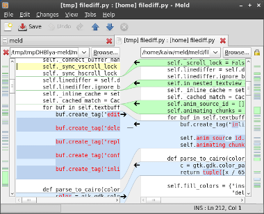
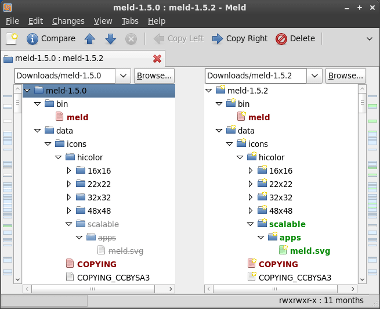
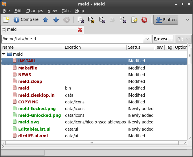

File comparison
- Edit files in-place, and your comparison updates on-the-fly
- Perform two- and three-way diffs and merges
- Easily navigate between differences and conflicts
- Visualise global and local differences with insertions, changes and conflicts marked
- Use the built-in regex text filtering to ignore uninteresting differences
- Syntax highlighting (with optional gtksourceview)

Directory comparison
- Compare two or three directories file-by-file, showing new, missing, and altered files
- Directly open file comparisons of any conflicting or differing files
- Filter out files or directories to avoid seeing spurious differences
- Simple file management is also available

Version control
- Meld supports many version control systems, including Git, Mercurial, Bazaar and SVN
- Launch file comparisons to check what changes were made, before you commit
- View file versioning statuses
- Simple version control actions are also available (i.e., commit/update/add/remove/delete files)

Internationalization support
Thanks to many translators and the
GNOME Translation Project,
Meld is available in many languages. You can check whether your language
is supported at Meld's
translation statistics page.
If your language isn't supported, or if you'd simply like to assist with
translation, you can help out by joining the GNOME Translation project.